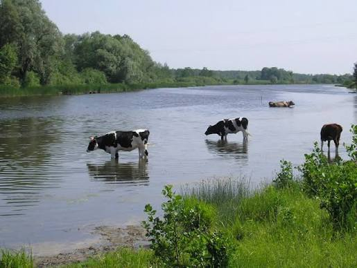
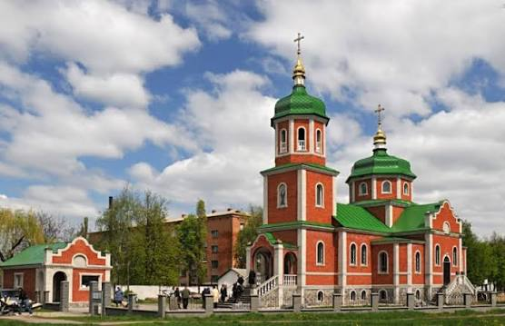

Моя Батьківщина — це затишне і мальовниче місто Хорол, розташоване на березі однойменної річки на Полтавщині. Це одне з найдавніших міст України, вперше згадане ще у літописах 1083 року Володимиром Мономахом. Місто має багатовікову історію, героїчне козацьке минуле та неповторну атмосферу рідного краю.


Студентка групи 301-ТН Шестакова А.Є.